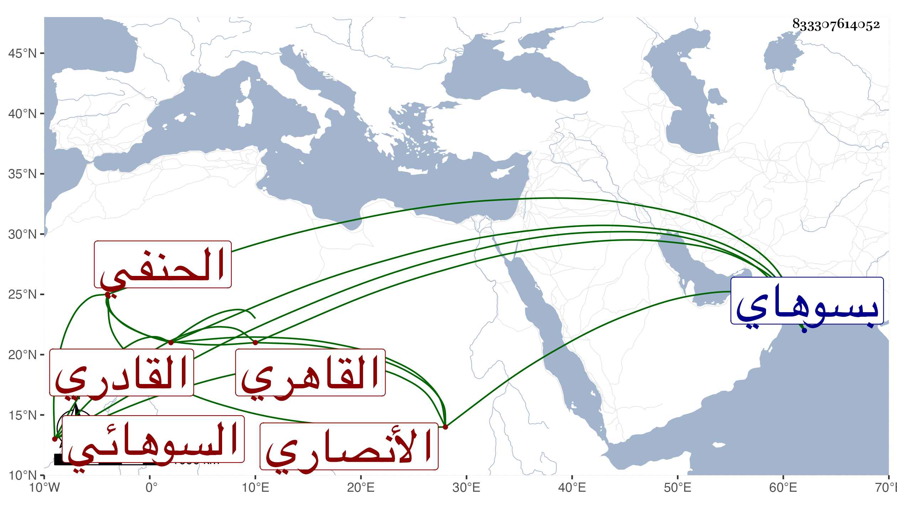

0902Sakhawi.DawLamic.ITO20230111-ara1.EIS1600.833307614052
Biography ID: 833307614052
508
محمد بن محمد بن محمد بن أبي بكر بن أبي الحسن علي بن محمد بن صالح الشمس الأنصاري السوهائي الأصل القاهري الحنفي القادري أخو أبي الرجا وخال يس المكتب ويعرف بالجلالي نسبة . ولد في سنة خمس وثمانمائة بسوهاي تجاه أخميم بل هي من عملها ونشأ فحفظ القرآن وزعم أنه سمع الشرف بن الكويك ولم يثبت ذلك عندي فإنه أصلح في الطبقة التي بالنسخة من الشفا وكشط . اشتغل قليلا ولازم الأمين الأقصرائي بل اختص بغير واحد من الأمراء وأجاد اللعب بالشطرنج وجود الخط وكتب به أشياء منها شرح معاني الآثار للطحاوي وخطب بمدرسة الجاي والجانبكية مع وظائف فيهما وفي غيرهما بل استقر بعد الأقصرائي في مشيخة الأيتمشية بباب الوزير ثم رغب عنها للسمديسي وتزايدت جهاته وانتشرت ملاءته حتى أن السلطان تلمح له بما يقتضي ثبوت ذلك عنده إلى أنت انتزع منه بيته كما بينته في الحوادث مع إمساكه . وقد صاهر الزين الدجوي على ابنته واستولدها عدة أحدثهن تحت الشمس الفرنوي . وله ولد اسمه بدر الدين محمد ذو أولاد من ابنة إبراهيم بن زين الدين المنوفي .
